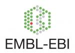

cy3sbml A Cytoscape App for SBML
The main functions of cy3sbml are accessible from the Cytoscape menu bar above.
 |
Hide/Show panel | Changes the visibility of the cy3sbml panel. |
 |
SBML Import | Load SBML files via the File Import Dialogue. To import multiple files select multiple files. |
| BioModel Import | Load SBML files from BioModels. | |

|
SBML Validation | Validate SBML files against the SBML specification. Select the network to validate and click the validation icon. |
 |
Examples | Load and explore the SBML examples. |
 |
Help | Display this help information. |
Support
About
Our mission is the visualization of Systems Biology Markup Language (SBML) within the network context.
Our vision is to create a visualization tool for computational models which seamlessly integrates with computational modeling frameworks and workflows.
cy3sbml was developed by Matthias König in cooperation with Andreas Dräger and Nikolas Rodriquez.

How to cite
Matthias König, Andreas Dräger and Hermann-Georg Holzhütter
CySBML: a Cytoscape plugin for SBML
Bioinformatics. 2012 Jul 5. PubMed
Funding & Support
This project was supported by the Federal Ministry of Education and Research (BMBF, Germany) within the research network Systems Medicine of the Liver (LiSyM, grant number 031L0054) and Virtual Liver Network (VLN, grant number 0315756), and by the National Resource for Network Biology NRNB within the NRNB Academy Summer Session 2015. This project is supported by the Institute for Theoretical Biology (ITB) of the Humboldt University Berlin.
Attribution
We thank the SBML, Cytoscape, BioModels, BiGG and OLS community for their support. Herby, we attribute the use of the following resources and libraries.
| SBML |
Matthias König, Andreas Dräger and Hermann-Georg Holzhütter CySBML: a Cytoscape plugin for SBML Bioinformatics. 2012 Jul 5. PubMed |
|
| Biomodels | ||
| MIRIAM registry & identifiers.org | ||
| Ontology Lookup Service (OLS) | ||
|  | EMBL EBI | |
| UniProt | ||
| ChEBI |